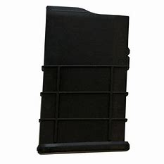
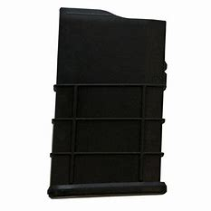

Reguli de siguranță în cadrul unui loc amenajat pentru tirul cu arma
Oricare om care se înscrie la tirul cu arma , i se va prezenta un set de reguli după cum urmează :
- TOT timpul ține gura armei într-o direcție sigură : această regulă este pentru a evita accidentele de tipul descărcării armei cu sau fară voința celui care o ține ;
- Țineți degetul departe de trăgaci pâna când ești gata să tragi în ținta indicată : aceasta regulă (ca și prima) a fost creată pentru evitarea accidentelor ;
- TOT timpul consideră că arma ta este încărcată (mai puțin atunci când o desfaci să o cureți) : aceată regulă crează în cadrul minții celui care are arma în mână o stare de precauție , făcându-l să se gândească de două ori în ce direcție să îndrepte pușca ;
- TOT timpul să îți știi ținta și , mai ales , ce se află după ea : dacă știi unde ți se află ținta , ar trebui să știi și ce se află după ea , ca să fii sigur că glonțul nu va ricoșa înapoi în direcția ta .
EXEMPLU DE AȘA NU
O istorie a gloanțelor
Vreau de la început să fac ceva foarte clar : este într-o oarecare măsură greșit să denumim muniția pe care o folosim drept gloanțe , deși o facem pentru ușurarea vorbirii . Glonțul este de fapt partea din muniție care iese din armă prin intermediul țevii (partea care rănește/marchează ținta și care este propulsată înainte de către praful de pușcă din cadrul cartușului) . În cele ce urmează voi fi mai explicit despre acest subiect .
Muniția s-a schimbat mult de-a lungul secolelor . De la utilizarea bucăților brute de plumb sau alte tipuri de metal în cele mai vechi muschete până la cartidge-urile (muniția) proiectate cu precizie pe care le folosim astăzi , a existat o îmbunătățire constantă și progresivă . Cu toate acestea , de la cele mai vechi tunuri din secolul al 12-lea din China , la semi-automatele elegante de astăzi , principiul de bază rămâne același . Conceptul de bază este folosirea pulberii pentru a lansa un proiectil/glonț la țintă.
De la primele puști Jaeger din Prusia , prin muschetele cu piatră din secolele XVIII și XIX , până după Războiul Civil American , muniția a fost o bucată separată de plumb turnată care avea nevoie de o încărcătură de pulbere pentru a-l trage . Cel care dorea să tragă trebuia să toarne manual pulberea pe botul armei și să o împacheteze cu o cârpă și după să introducă un glonț (de regulă , bucăți de plumb) . După asta , trebuia să adauge pulbere într-o zonă numită "pan" pentru a fi aprins de mecanismul flintlock și , ca o consecință , să lanseze glonțul/plumbul .
Acest lucru a fost îmbunătățit oarecum începând cu anul 1840 , când armele de foc cu percuție (percussion firearms) au ajuns să fie inventate . Odată cu o armele de foc cu percuție , a apărut și încărcătura premăsurată a pulberii care a fost conținută în saci mici de hârtie sau pânză nitrată , iar glonțul ambalat pe partea de sus a acesteia . Mai degrabă decât turnarea pulbere în partea de armă numită "pan" pentru a da foc pulberii din armă , au apărut niște bucăți mici și subțiri de alamă sau cupru sub forma unui castron numite capace de percuție (percussion caps), umplute cu fulminat de mercur , care au fost lipite pe conuri sau "sfarcurile" armei . Fiecare dintre aceste "sfârcuri" avea o gaură mică în ele, iar când Hammer-ul armei de foc lovea capacul de percuție , o scânteie trecea prin gaură , aprinzând încărcătura principală . La acea vreme , inventatorii nu știau , dar armele de foc cu percuție erau o tehnologie de scurtă durată care , însă , a deschis calea pentru progrese rapide în dezvoltarea armelor de foc . Au făcut o mică diferență între armele flintlock și armele complet automate de azi .
Pentru o scurtă perioadă de timp în ultima parte a anului 1800 , a existat un tip de muniție numit pinfire . Acest tip de muniție aveau un ac mic care ieșea din partea laterală a bazei cartușului . Atunci când era lovit de un Hammer sau alt mecanism de lovire , se aprinde Primer-ul și după, praful de pușcă . Acest tip de muniție nu este la fel de sigur sau de încredere decât este muniția pe care o folosim în zilele noastre și nu a rezistat foarte mult timp . Un număr mic de arme de foc au fost inventate pentru acest tip de muniție , printre acestea fiind incluse unele pistoale de buzunar Derringer , folosind un calibru mic de tip pinfire . În timpul domniei scurte a armelor de foc cu percuție , saci mici de hârtie nitrată au fost uneori menționate ca "Cartușe de hârtie" .

În 1860 , armurierul Benjamin Tyler Henry a perfecționat un tip de muniție complet autonomă din metal-rimfire , care fusese inventată recent de Daniel Wesson , și l-a folosit în propria invenție , the lever action rifle . Ca majoritatea lucrurilor noi , a fost un pic cam lent la început până să îi realizeze populația importanța și puterea . În acea vreme , încă era perioada când majoritatea foloseau muschete sau revolvere de percuție , iar folosirea puștilor cu muniție metalică completă și în același timp autonomă- era încă o fantezie greu de crezut pentru mulți . Abia la începutul anilor 1870 , utilizarea muniție metalice complete a crescut constant și a înlocuit vechile muniții formate din plumb folosite în armele de foc flintlock .
.png)
Începând cu muniția de calibrul .44 , utilizate în 1860 Henry Repeateing Rifle (numele unei arme) , dezvoltarea muniției de tip centerfire a urmat și ea destul de rapid . În același timp , tehnologia de ratcheting (clichet) a revolvere semi-automate a avut , de asemenea , parte de o îmbunătățire rapidă , culminând cu succesul revolver-elor de tip Colt Single Action , care au fost răspândite și utilizate foate des . Acesta a fost și momentul când vechea pulbere neagră a fost înlocuită de către noua pulbere fără fum . Până la sfârșitul anilor 1800 , un nou tip de sistem de alimentare a fost în curs de dezvoltare , un sistem care a revoluționat din nou tehnologia armelor de foc- utilizarea de încărcătoare tip - clip , urmată aproape imediat de utilizarea de încărcătoare de tip - cutie . Acest lucru a dus la crearea legendelor pe care le știm până și astăzi , acelea fiind Mauser C96 și Colt M1911 .
 

Până în acest moment , muniția cu cartuș de metal , de sine stătătoare a fost în uz pe scară largă și încă este în uz până astăzi . Astăzi , muniția de tip rimfire este utilizată , în principal , numai într-un calibru mic , cum ar fi muniția de calibru .22 .(bune pentru antrenament)
Muniția de tip rimfire are Primer-ul situat în lateralele bazei cartușului . Firing pin-ul sau Hammer-ul lovesc cartușul, zdrobind fundul cartușului și Primer-ul din interiorul acestuia , care , la rândul său aprinde pulberea . La muniția de tip rimfire , fundul cartușului este zdrobită , iar cartușul în sine nu mai poate fi reutilizat . Cu muniția de tip centerfire , cartușul poate fi reutilizat , dacă avem echipamentul pentru a înlocui pulberea , Primer-ul și glonțul din componența cartușului . Acest lucru se numește handloading sau reîncărcare , dar necesită echipamente speciale , și poate fi periculos cu excepția cazului în care avem experiență în a face acest lucru . Principalele motive pentru a face acest lucru sunt pentru a reduce cheltuielile de cumpărare a muniție noi , (mai ales în aceste zile!) și că handloading vă permite să aveți mai mult control asupra calității și aspectului muniției .
Gloanțe
Încă o dată , voi relua cum funcționează muniția , asta în cazul în care cititorii site-ului nu au înteles din istorisirea de mai sus . Muniția din zilele noastre este de două tipuri : rimfire și centerfire . Diferența dintre ele este în poziția Primer-ul , la rimfire fiind pe lateral , iar la centerfire fiind în centrul (și de asemenea cartușele de la centerfire pot fi reutilizate , pe când cele de la rimfire nu) . Indiferent de tipul de muniție , aceasta are 4 părți : Primer-ul (cel care oferă scânteia necesară pentru aprinderea prafului de pușcă - gândiți-vă la Primer ca la o bujie de la mașină , doar că e de unică utilizare) , praful de pușcă (care lansează glonțul) , cartușul (BrassCasing , partea care ține la un loc toată compoziția - este făcut din metal) și glonțul (cel care este responsabil pentru rănirea / distrugerea oamenilor/obiectelor) .
Numele muniției este în general dat de către diametrul fundului cartușului sau de către lungimea totală a cartușului+glonțului , iar fiecare tip de muniție este folosit în diferite arme . Întotdeauna TREBUIE să știm ce fel de muniție folosește arma , pentru că , dacă introducem muniția greșită , putem bloca/distruge/exploda arma și chiar să ne rănim pe noi inșine .